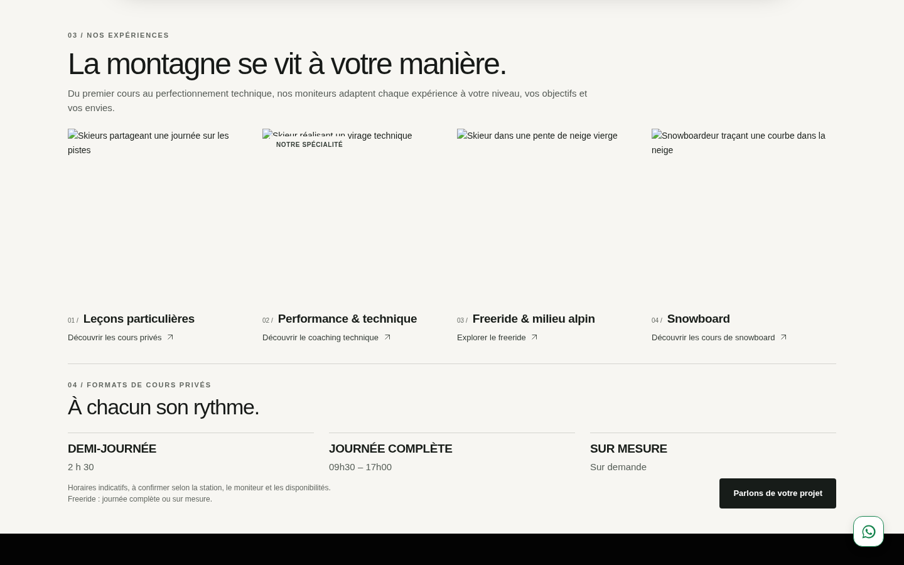
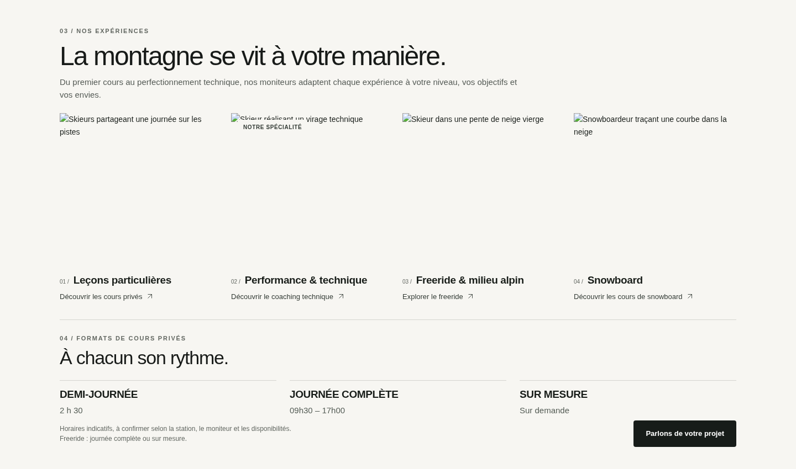
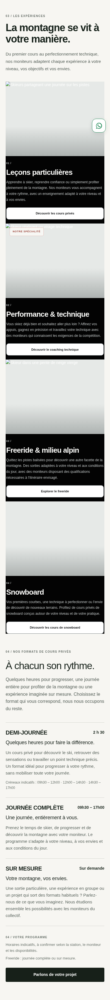
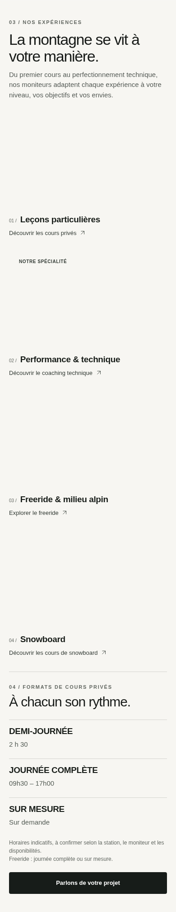

Expériences & Formats — ensemble compact
Une seule proposition. Hauteur mesurée : 849,5 px à 1440 px. Les quatre expériences et trois formats sont simultanément visibles à 1440×900.
Recette photographique et HTTPS bloqués : le proxy refuse les photos, les polices et l’API Cloudflare. Les captures prouvent la composition et les dimensions avec les ressources manquantes. Elles ne valident pas encore les photographies ni les polices réelles. Détail du blocage.
Viewport de référence — 1440×900

Comparaison — 1440 px



Comparaison — 390 px




Toutes les dimensions
1536×960 : viewport exact · ensemble complet


1440×900 : viewport exact · ensemble complet

1280×800 : viewport exact · ensemble complet


1024×768 : viewport exact · ensemble complet


768×1024 : viewport exact · ensemble complet


390×844 : viewport exact · ensemble complet

375×812 : viewport exact · ensemble complet


Rapport et textes conservés · Résultats détaillés · Spécification appliquée